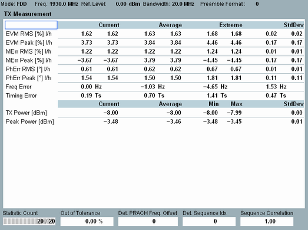

View TX Measurement
This single-preamble view contains tables of statistical results for the PRACH measurement.

TX measurement
The table provides an overview of statistical values obtained from the measured preamble. Other detailed views provide a subset of these values.
- EVM, magnitude error ("MErr"), phase error ("PhErr"):
The R&S CMW calculates RMS and peak values for low and high EVM window position (l/h); see "Calculation of Modulation Results". - Carrier frequency error: offset between the measured carrier frequency and the nominal RF frequency of the measured radio channel
- Timing error: Difference between the actual timing and the expected timing. The timing error measurement requires an "external" trigger signal to derive the expected timing.
Suitable trigger signals are, for example, the PRACH trigger signal provided by the signaling application or an external trigger fed in via the rear panel.
The unit Ts stands for the basic LTE time unit, see "Preambles in the Time Domain". - TX power: received power, RMS averaged over all samples within the preamble duration
- Peak power: peak power of all samples within the preamble duration
For additional information, refer to "Common View Elements".